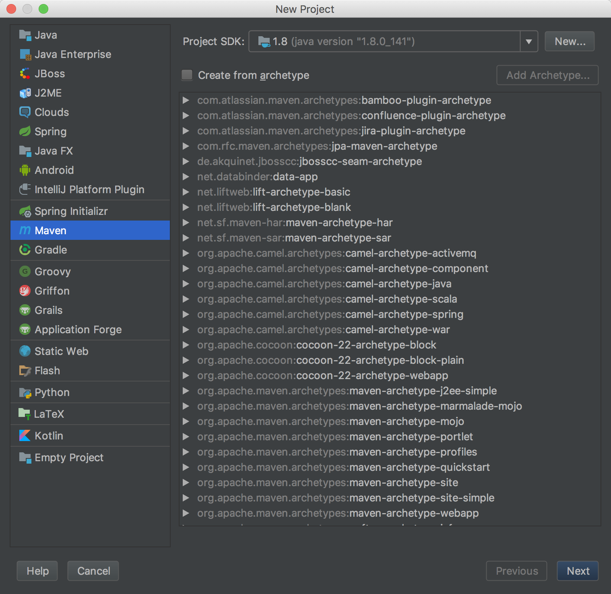

本文操作环境：
- MacOS
- JDK 1.8
- IntelliJ IDEA
- 不需要安装任何模式的Hadoop
简介
Hadoop可以运行在三种模式下：
- 单机模式
- 伪分布模式
- 完全分布式模式
实际上，基于Hadoop的MapReduce程序在单机上运行，并不一定需要安装伪分布模式Hadoop系统，甚至，并不一定需要安装Hadoop。
运行和调试MapReduce程序只需要有相应的Hadoop依赖包就行，可以完全当成一个普通的JAVA程序。本文就将介绍这种简单方便的方法。
-
这种方式的优点：
- 开发调试方便
- 编写的程序通常不需要修改即可在真实的分布式Hadoop集群下运行
-
缺点：
- 没有Hadoop的整个管理控制系统，如JobTracker面板
Maven
Maven是一个项目管理工具，我们这里主要用到的是它的依赖管理系统。通常我们在开发Hadoop MapReduce程序时，首先要下载对应版本的镜像，然后加载镜像中的JAR依赖包，开始编写代码。这个步骤说起来容易但经常会碰到错综复杂的依赖关系，而利用Maven就能轻松解决这个问题。只需要在Maven配置文件中指定Hadoop依赖包名字和版本号，Maven就能自动搞定这些依赖，你只需要专心写代码就好了。
IntelliJ IDEA
于Eclipse相比，内置Maven支持，操作简单，用起来比Eclipse顺手多了。
以WordCount为例
新建项目
在Intellij中点击File->New->Project，在弹出的对话框中选择Maven，JDK选择1.8，点击Next。

接下来填写Maven的GroupId和ArtifactId，随便填，点击Next。
然后是Project name，这里填写WordCount，点击Finish。
这样就新建好了一个空的项目，然后打开Intellij的Preference偏好设置，定位到Build, Execution, Deployment->Compiler->Java Compiler，将WordCount的Target bytecode version修改为1.8。
配置依赖
修改pom.xml：
- 添加源
1
2
3
4
5
6
| <repositories>
<repository>
<id>apache</id>
<url>http://maven.apache.org</url>
</repository>
</repositories>
|
- 添加依赖
这里只需要用到基础依赖hadoop-core和hadoop-common；如果需要读写HDFS，则还需要依赖hadoop-hdfs和hadoop-client；如果需要读写HBase，则还需要依赖hbase-client。
1
2
3
4
5
6
7
8
9
10
11
12
| <dependencies>
<dependency>
<groupId>org.apache.hadoop</groupId>
<artifactId>hadoop-core</artifactId>
<version>1.2.1</version>
</dependency>
<dependency>
<groupId>org.apache.hadoop</groupId>
<artifactId>hadoop-common</artifactId>
<version>2.7.2</version>
</dependency>
</dependencies>
|
修改pom.xml完成后，Intellij会提示Maven projects need to be Imported，点击Import Changes以更新依赖
WordCount
在src->main->java下新建一个WordCount类
1
2
3
4
5
6
7
8
9
10
11
12
13
14
15
16
17
18
19
20
21
22
23
24
25
26
27
28
29
30
31
32
33
34
35
36
37
38
39
40
41
42
43
44
45
46
47
48
49
50
51
52
53
54
55
56
57
58
59
60
61
| import java.io.IOException;
import java.util.StringTokenizer;
import org.apache.hadoop.conf.Configuration;
import org.apache.hadoop.fs.Path;
import org.apache.hadoop.io.IntWritable;
import org.apache.hadoop.io.Text;
import org.apache.hadoop.mapreduce.Job;
import org.apache.hadoop.mapreduce.Mapper;
import org.apache.hadoop.mapreduce.Reducer;
import org.apache.hadoop.mapreduce.lib.input.FileInputFormat;
import org.apache.hadoop.mapreduce.lib.output.FileOutputFormat;
public class WordCount {
public static class TokenizerMapper
extends Mapper<Object, Text, Text, IntWritable> {
private final static IntWritable one = new IntWritable(1);
private Text word = new Text();
public void map(Object key, Text value, Context context
) throws IOException, InterruptedException {
StringTokenizer itr = new StringTokenizer(value.toString());
while (itr.hasMoreTokens()) {
word.set(itr.nextToken());
context.write(word, one);
}
}
}
public static class IntSumReducer
extends Reducer<Text, IntWritable, Text, IntWritable> {
private IntWritable result = new IntWritable();
public void reduce(Text key, Iterable<IntWritable> values,
Context context
) throws IOException, InterruptedException {
int sum = 0;
for (IntWritable val : values) {
sum += val.get();
}
result.set(sum);
context.write(key, result);
}
}
public static void main(String![] args) throws Exception {
Configuration conf = new Configuration();
Job job = Job.getInstance(conf, "word count");
job.setJarByClass(WordCount.class);
job.setMapperClass(TokenizerMapper.class);
job.setCombinerClass(IntSumReducer.class);
job.setReducerClass(IntSumReducer.class);
job.setOutputKeyClass(Text.class);
job.setOutputValueClass(IntWritable.class);
FileInputFormat.addInputPath(job, new Path(args[0]));
FileOutputFormat.setOutputPath(job, new Path(args[1]));
System.exit(job.waitForCompletion(true) ? 0 : 1);
}
}
|
配置输入文件
这里在WordCount下（src同级目录）新建一个文件夹input，并添加一个或多个文本文件到input中。
点击File->Project Structure，在弹出来的对话框中选择Modules项，点击Sources选项卡，将Language level调整为7。（如果你用到版本控制的话，可以在这里将input文件夹标记为Excluded。）
配置运行参数
这里我们需要配置此程序运行时的Main class，以及WordCount需要的输入输出路径。
在Intellij菜单栏中选择Run->Edit Configurations，在弹出来的对话框中点击+，新建一个Application配置。配置Main class为WordCount（可以点击右边的…选择），Program arguments为input/ out/，即输入路径为刚才创建的input文件夹，输出为out。
运行
上述配置完成后，点击菜单栏Run->Run 'WordCount’即开始运行此MapReduce程序，Intellij下方会显示Hadoop的运行输出。待程序运行完毕后，Intellij左上方会出现新的文件夹out，其中的part-r-00000就是运行的结果了！
file1：Hello World Bye World
file2： Hello Hadoop Goodbye Hadoop
运行结果：